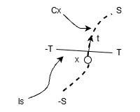
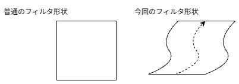

FDoG Filter
前回Coherent Line Drawing1を読むことで、まずETFというものを求めた.
これはTangent方向を求めたのに等しいわけである.
これを使ってフィルタ処理を掛けるのが目標.
そのため、前回のETF2は前提となるため、読んでない人は読んでおくといいかもしれない.
因みに今回やるFDoGは「Flow based Difference of Gaussians」の頭文字を取って「FDoG」というわけだ.結構長い名前だね.
さて、今回考えるのはこんな感じの図だ.

現在のピクセル位置があり、これに対して流れの方向を表すが存在する.
この流れを前回のETFでは計算したことになる.
は各Pixelで定義されており、この方向に進むことで流れが形成される.
この流れの端をととしよう.
ここまでくるとちょっと雰囲気が出てきませんか？線積分の.
この流れに沿って処理をするわけではあるが、基本的にフィルタは2次元の処理.
そのため、線に対してだけではなく直交方向のデータを集めることから始める.
まず直交方向をパラメータ化し、と定義しよう.
このの端はとだ.
画像をとし、フィルタをとすると、この直交方向のデータを集める処理は以下のようになる.
式だけ見ると難しそうに見える.
これは直交方向に進めつつ、フィルタと画素を足し合わせてる.
ということは、単純にフィルタを掛けた結果を作ってるだけである.
実際にこの計算をするために知っておかないといけないものは3つある.
まず1つ目はフィルタに何を採用するか？
直交方向のフィルタには単純にDoGフィルタを採用する.
FDoGで定義されてるのはこの形だった.
のハイパーパラメータありなので、どちらかというとXDoGのときに近い気もするが...
まあひとまずはこれでいいでしょう.
因みには画像空間上の点なので、と対応します.
2つ目の問題はどうやって直交方向を手に入れるか？
これは深く考えなくてもが分かるので、それを度回転させるだけでいい.
実際の所その方向が分かればいいだけなので、別段度でも良い.
一旦この方向はとかにしておこうか.
3つ目はどれくらいの幅で探索をするか？
要はをどれくらいで取るかというお話.画像上を移動するので、ピクセル分移動しないと変化が起きないことになってしまう.
まず1stepの動きは
で計算するらしい.
どうもが良いらしく、ということは
みたいな単純なステップで良いということになる.
まあ、とはいえあまり細かく刻んでも1pixel動いてくれないと意味がない...
ということで、1pixel毎のステップでやろうと思う.
ステップが分かったところで幅に関して.
幅はガウシアンのに応じてすきに取ればよいっぽい.
あまり遠くまで取っても意味ないので、くらいにしようかな.
さて、実際にコードにまずはここまでを落とし込んでみよう.
今回は与えられた位置posに対して、その位置のtangentであるtを渡すように対応してみた.
tを90度回転して、tangentに垂直な方向を生成.その後、stepを1pixel毎に動くようにしてみた.
もう少し細かく規定してもよいが、今回は簡略的にそれっぽくね...
// それっぽく1進むように,もっと勾配を見て細かく規定してもよい
Vector2D<int> step = Vector2D<int>::Zero();
step.x = Sign(n.x); step.y = Sign(n.y);
ここまでくれば実際に計算するだけ.
まずはを求める.
double sum = 0.0;
double result = 0.0;
for (int i = -T; i <= T; i++)
{
Vector2D<int> p = pos + static_cast<double>(i) * step;
p.x = Clamp(p.x, 0, values.width() - 1);
p.y = Clamp(p.y, 0, values.height() - 1);
double imageValue = ft[p.y][p.x];
ここで注意点がある.
今回はと垂直な方向に対して、直線にサンプルを取る.
つまりこれはで取っているのと変わらない.
そのため、2次元のガウシアンではなく1Dのガウシアンで適用する.
sqrtをしてる点やが2乗にしない点を注意しよう. // Sigmaの1D Gaussian
double exp1 = Exp(-(pos-p).lengthSq() / (2.0f * Sigma_L * Sigma_L));
double denom1 = Sqrt(2.0 * Math::Pi) * Sigma_L;
double conv = exp1 / denom1;
// Sigma*Kの1D Gaussian
double denomK = Sqrt(2.0 * Math::Pi) * Sigma_kL;
double expK = Exp(-(pos-p).lengthSq() / (2.0f * Sigma_kL * Sigma_kL));
double convK = expK / denomK;
double convResult = conv - tau * convK;
result += imageValue * convResult;
sum += convResult;
}
return result / sum;
};
これで垂直方向は終わり.
次は方向についてみていく.
やることは実は垂直方向とほぼほぼ同じで、こちらも線積分のような形で記述可能.
に関しては先程計算したものであるため、特に問題ない.
に関しては単純にその点にいるときのガウス関数である.
が積分形式なので、結局二重積分みたいな形になるため、結局やってることとしては普通の2Dガウシアンみたいなのと変わらない.
イメージを図示すると分かりやすいが、流れに沿って上手くフィルタ形状を変えているくらいである.

うん、まあ実際は垂直方向を考えるともう少しうねるはずだがイメージとしてはこんな感じ.
フィルタ形状が流れに沿って生成され、そこに重みを考慮して計算しているというわけなんだなぁ.
さて、では実際にコードに移ろう.
まずは最初に現在の位置のを取得する.
そしたら必要なパラメータを用意する.
今回は今までのステップが決まってるようなものと違い、移動の距離が可変.
そのため、distanceという距離を保持する値も用意する.
そして、移動距離を計算する必要があるため、今の位置pと前の位置p_prevを用意.
double result = 0.0, sum = 0.0;
for (auto dir : Array<double>{1, -1})
{
double distance = 0.0;
Vector2D<int> p = pos, p_prev = pos;
動いてたら終わり.動いてなければ評価を繰り返す.
stepの計算は大体同じ、ただし移動量がの場合は動けなくなるので終わるようにする.
Vector2D<int> step = Vector2D<int>::Zero();
step.x = Sign(t.x); step.y = Sign(t.y);
if (step == Vector2D<int>::Zero()) { break; }
ただし正方向と負の方向の両方の探索が必要なため、
dirで反転している.範囲外の場合はこれ以上移動できないので終わりにする.
// 移動
p += step * dir;
// 範囲外は行かないようにしとく
if (p.x < 0.0 || ft[0].size() - 1 < p.x) { break; }
if (p.y < 0.0 || ft.size() - 1 < p.y) { break; }
その後,を計算して、先程のガウシアンと掛け合わせたものを蓄積する.
これでが計算できたことになる.
// 距離を加算
distance += (p-p_prev).length();
// Sigmaの1D Gaussian
double exp1 = Exp(-distance * distance / (2.0f * Sigma_M * Sigma_M));
double denom1 = Sqrt(2.0 * Math::Pi) * Sigma_M;
double conv = exp1 / denom1;
double F = PerpendicularConv(p, t);
result += F * conv;
sum += conv;
前回の位置も更新しておく.
さて、これでは求まったが最後に白黒の判定が必要.
この論文では以下のような感じで白黒の判定をしてるっぽい.
まず負となっている位置を探す.
見つかったらあとはそこの値をで計算してそれっぽくしてる.
負の値ということはとなるはず.なので、上手く丸め込むためにをしてるわけだ.
result = sum == 0.0 ? 0.0 : result / sum; // 正規化
result = result <= 0.0 && (1 + Tanh(result) < selector) ? 0.0 : 1.0;
return result;
};
ということでこちらもitration出来るようにしておく.
// フィルタ処理
for (int i = 0; i < IterationFDoG; i++)
{
auto temp = ft;
for (int w = 0; w < width; w++)
{
for (int h = 0; h < height; h++)
{
temp[h][w] = FDoG(Vec2{ w, h });
}
}
// next
ft = temp;
}
うん、ちゃんと輪郭を取れていそう.
今回は試しに特定のピクセルにおけるの軌道との起動も点で表示するようにしてみた.
ちょっと左上の空を見てほしい.
ここに赤色での軌跡を左右の二本の線で引き、の軌跡を中心の線で引いている.
普通だと縦横の箱のような形状でサンプルするはずだけど、こうやって見ると斜めにサンプルしているのが分かる.
あまりの変化がない位置なので面白味はないけど、どういう挙動をしてるのかは分かりやすいと思う.
ということでこれでFDoGも終了！
残りはFXDoGだけど、これに関してはもう語ることがほぼなさそうだけど、次回はこれをやってフィナーレとしよう.